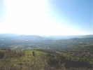
Cervolix, sur le plateau de Gergovie au Sud de Clermont-Ferrand. A l'arrivée, je roule doucement, la vue est toujours aussi magnifique...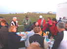
Bien sûr, comme tous les ans, autour des campings-cars des habitués, petit pot commun contributif où chacun apporte ce qu'il veut, et certains plus que d'autres...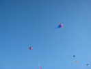
Au petit matin, Michel Trouillet a déjà sorti des flows-forms pleins d'épines, aux lignes décorées !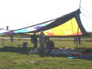
Michel a aussi un grand velum pour s'abriter du soleil, qui ne sera pas violent ce week-end !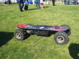
Bien sûr, le long du terrain, une allée marchande qui regorge de stands de gadgets divers et publicitaires... On y trouve ce Skate... à propulsion électrique, déjà vu à Houlgate.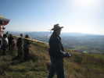
Sur le flanc au vent du plateau, les planeurs-maquettes s'en donnent à coeur-joie, avec cette brise qui a soufflé fort toute la nuit et continue...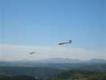
Ces planeurs sont très ressemblants et fins comme les vrais ! On les voit même sortir les aérofreins pour ne pas monter trop haut !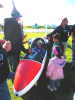
Pour faire la comparaison, en voilà un vrai, monté en remorque et qui redescendra de même (dommage !). Les fanas peuvent s'asseoir dedans pour un petit contact, et leur inspirer une envie ?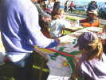
Un atelier cerf-volant, où les enfants peuvent décorer des dragons et autres oiseaux en Tyvek, un peu souples pour le vent d'aujourd'hui...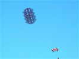
Ce beau cellulaire rigide supporte très bien le vent fort !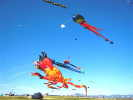
Ca y est, les Awitas ont monté leur bestiaire, pieuvres, calmars, Nounours, raies, crabes, etc !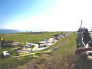
Les aéro-maquettistes ont étalé leurs richesses impressionnantes tout au long d'un grand tapis... De splendides appareils réalistes, le plus souvent, mais aussi, bien sûr, les Schtroumpfs qui pédalent, etc. Le losange sur le mât sert à indiquer les fréquences employées par ceux qui veulent voler, avec une pince à linge et un ruban de couleur...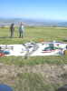
L'Italien présent aux Monts de Blond avec ses ailes volantes en alu, électriques, est aussi venu et volera tout aussi bien !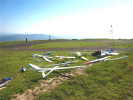
Et tout au bout, les planeurs, mais ceux-là décollent à la main, on les jette dans le vide face au vent !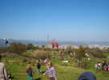
Michel Trouillet, sur sa demande, a installé ses Jardins du Vent plus bas et à gauche, il a ainsi beaucoup plus d'espace et les cervolistes aussi ! Il a laissé tomber les fusées qui occupaient aussi pas mal de place...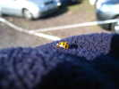
Une coccinelle jaune avec plein de points noirs, ça change. J'en avais plusieurs dans mon camion !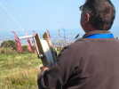
Patrice a sorti le dérouleur qu'il a fabriqué pour faire de la photo : un cadre en tige d'acier avec un passage de fil et 2 anneaux pour accrocher au baudrier, une bobine plate avec 2 manivelles...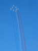
Attention, le grand moment que les organisateurs espéraient depuis plusieurs années : la Patrouille de France arrive, il faut tout poser par terre ! Sous la conduite du Commandant Virginie GUYOT, elle fera une spectaculaire présentation, peut-être pas aussi musclée que dans les grands meetings, mais quand même impressionnante !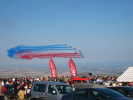
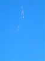
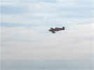
Un bruit de Formule 1, très aigu, pour ce petit avion qui passe en trombe... Un avion de course à l'ancienne. Les courses modernes ont lieu au long d'un slalom de pylônes coniques gonflables de 20 ou 30 m de haut qui se déchirent dès qu'on y touche (avec une pénalité, bien sûr, mais moins grave qu'un accrochage avec un mât métallique !). J'en vois de temps en temps à la TV.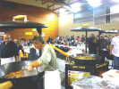
Au soir, on descend au gymnase de la Roche Blanche pour la soirée de fête. Mais pas mal de camping-caristes resteront sur le plateau, reculant devant une descente et une remontée par des routes étroites et tortueuses. Mais on n'est pourtant pas obligé de traverser Gergovie ! Un bon menu : magret de canard, etc. Tous les équipages sont là : PAF, Cartouche Doré, Canadair, etc. Un hommage sera rendu à Renaud Ecalle, l'éblouissant pilote de voltige qui vient de se tuer avec sa famille en avion lors d'un vol de transit "ordinaire" mais avec une météo extrême...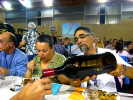
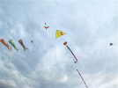
Dimanche matin, il faisait encore beau, avec un vent moins fort que samedi. Sur le parking des campings-cars, ça volait pas mal aussi. Gaby avait monté ses "canards" (PfeilEnte) !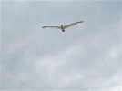
Je n'avais pas trop volé hier cause vent fort et ennuis gastriques. Aujourd'hui, ça va mieux, je lance l'Albatros dans la conquête de l'espace, à 200 m, on est plus tranquille !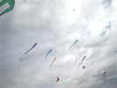
Les Vierzonnais ont lancé une patrouille de leurs Folyangs fétiches !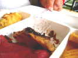
Tout le monde volera bien toute la matinée... Au déjeuner, gros progrès cette année, il y a une queue spéciale pour les équipages et les cervolistes. Le menu est bon : boeuf à la broche et Aligot, les fourchettes ne résistent pas à notre appétit féroce ! Un petit coup à boire serait bienvenu, mais à 14 Euros la bouteille de vin à 2 Euros, faut pas pousser...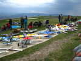
En repartant, un petit tour encore pour admirer les maquettes hyper-réalistes d'avions anciens, militaires le plus souvent !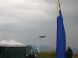
Pas de PAF aujourd'hui, mais l'Alphajet militaire viendra encore faire une belle série de voltige !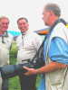
Sur le terrain, Jos discute sous ses fleurs, avec un armement impressionnant ! Evidemment, il doit faire de meilleures photos que moi...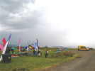
Mais là-bas à droite, il fait bien sombre et on commence à sentir les premières gouttes ! J'accélère vers mon camion, et tout le monde commence à replier son matériel...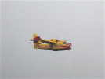
Le Canadair fera encore son show, sous la pluie ! Aile carrée à envergure faible et winglets pour une bonne maniabilité dans les petites vallées et 2 puissants turboprops, il fera presque des boucles !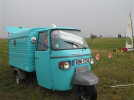
J'ai encore le temps de voir le puissant véhicule "vespacar" d'un fana de la photo du CVCF ! Madame s'est déjà mise à l'abri !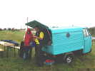
Le véhicule lui-même est en très bel état, impeccable. De plus le hayon levant est bien pratique aujourd'hui... pour s'abriter !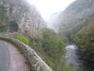
Je vais attendre un peu, mais la météo ne s'améliorant pas, je partirai à 16 h, direction les Gorges de la Loue dont je vois le panneau tous les ans mais que je n'ai jamais le temps ou le courage de visiter ! Je les suivrai tout au long, un peu décevant souvent, on ne voit que les arbres de la route pourtant tortueuse, mais quand même quelques beaux passages...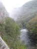